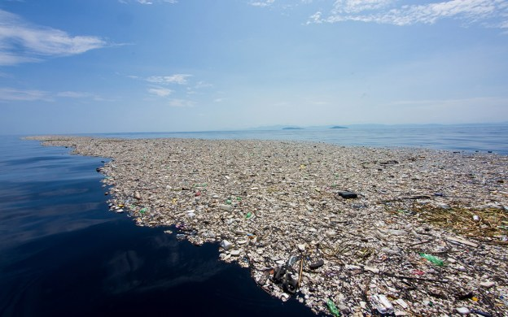
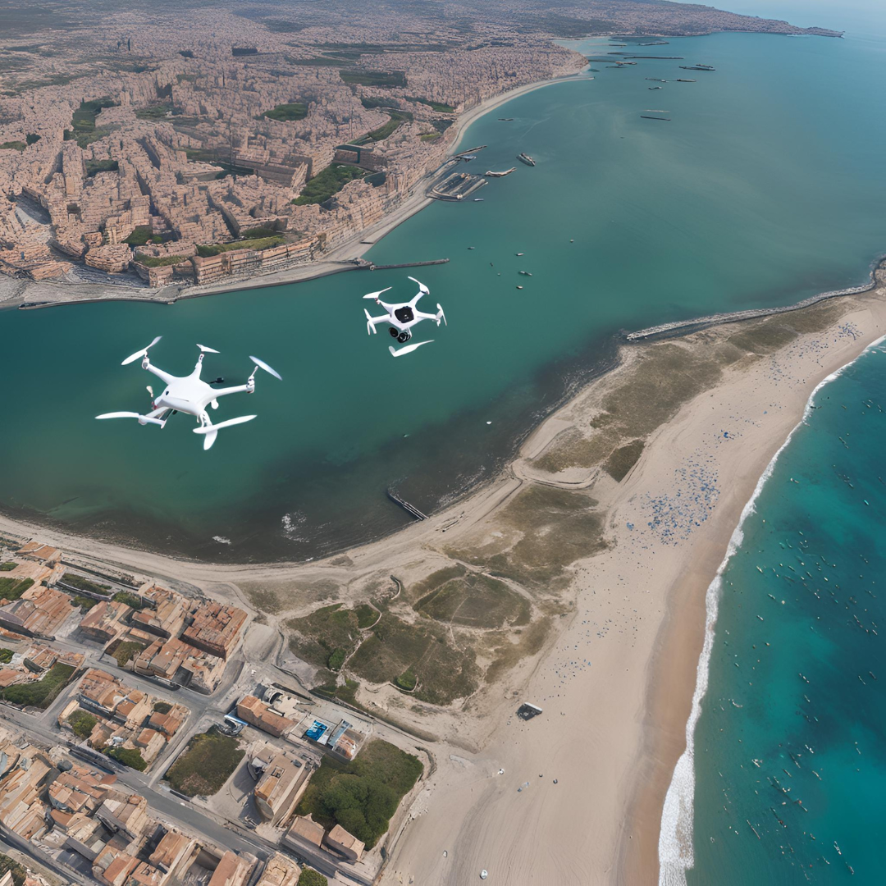

A poluição plástica nas áreas costeiras de Porto Verde está causando sérios danos aos habitats marinhos, afetando a vida marinha, a saúde pública e a economia local. A crescente quantidade de resíduos plásticos resulta em praias sujas e águas contaminadas, afastando turistas e prejudicando a pesca.

Nossa Tecnologia
Utilizamos uma combinação de sensores avançados, drones e robôs autônomos para monitorar e limpar os resíduos plásticos de forma eficiente. Nossos sistemas inteligentes garantem a remoção rápida e eficaz dos resíduos, preservando a biodiversidade marinha e melhorando a qualidade das praias.

Nossos Objetivos
Redução da Poluição: Diminuir significativamente a quantidade de resíduos plásticos nas praias e águas costeiras.
Preservação dos Ecossistemas: Proteger e recuperar os habitats marinhos, promovendo a biodiversidade.
Impulso Econômico: Aumentar a atratividade turística e melhorar as condições de pesca, impulsionando a economia local.
Conscientização Ambiental: Educar e engajar a comunidade sobre a importância da preservação dos oceanos.
Público-alvo
Nossa solução é projetada para beneficiar:
Comunidades Costeiras: Melhoria na qualidade de vida e oportunidades econômicas.
Autoridades Locais: Ferramentas para gestão eficiente da poluição e preservação ambiental.
ONGs Ambientais: Apoio técnico e parcerias para promover a sustentabilidade.
Indústria do Turismo: Praias limpas e atrativas, aumentando o fluxo de turistas.
Preservação Ambiental: Proteção dos habitats marinhos e aumento da biodiversidade.
Desenvolvimento Econômico: Melhoria no turismo e nas atividades pesqueiras, gerando mais renda para a comunidade.
Qualidade de Vida: Ambientes mais limpos e saudáveis para os moradores e visitantes.
Impacto Diário
Nossa solução impacta positivamente a vida diária dos moradores de Porto Verde ao proporcionar um ambiente mais limpo e saudável. A remoção contínua dos resíduos plásticos melhora a qualidade das praias e das águas, permitindo que a comunidade e os turistas desfrutem de um ambiente natural preservado.